22. Serviços web com o framework Flask
Por serviço web, entende-se aqui qualquer aplicação web que forneça dados brutos consumidos por um cliente, frequentemente um script de consola nos exemplos que se seguem. Não nos interessamos por uma tecnologia específica, como o REST (REpresentational State Transfer) ou o SOAP (Simple Object Access Protocol), por exemplo, que fornecem dados mais ou menos brutos num formato bem definido. O REST fornece jSON, enquanto que, no caso do SOAP, o resultado é XML. Cada uma destas tecnologias descreve com precisão a forma como o cliente deve interrogar o servidor e o formato que a resposta deste deve assumir. Neste curso, seremos muito mais flexíveis quanto à natureza do pedido do cliente e à da resposta do servidor. No entanto, os scripts escritos e as ferramentas utilizadas são semelhantes aos da tecnologia REST.
22.1. Introdução
Os scripts em Python podem ser executados por um servidor Web. Um script deste tipo torna-se um programa de servidor capaz de servir vários clientes. Do ponto de vista do cliente, chamar um serviço Web equivale a solicitar o URL desse serviço. O cliente pode ser escrito em qualquer linguagem, nomeadamente em Python. Neste último caso, utilizam-se então as funções de Internet que acabámos de ver. Além disso, é necessário saber «comunicar» com um serviço Web, ou seja, compreender o protocolo HTTP de comunicação entre um servidor Web e os seus clientes. Era esse o objetivo do parágrafo |o protocolo HTTP|. Os clientes web descritos nesta parte do curso permitiram-nos descobrir uma parte do protocolo HTTP.

Na sua forma mais simples, as interações cliente/servidor são as seguintes:
- o cliente estabelece uma ligação com a porta 80 do servidor web;
- o cliente faz um pedido relativo a um documento;
- o servidor web envia o documento solicitado e encerra a ligação;
- o cliente, por sua vez, encerra a ligação;
O documento pode ser de diversa natureza: um texto no formato HTML, uma imagem, um vídeo, etc. Pode tratar-se de um documento existente (documento estático) ou de um documento gerado dinamicamente por um script (documento dinâmico). Neste último caso, fala-se de programação web. O script de geração dinâmica de documentos pode ser escrito em várias linguagens: PHP, Python, Perl, Java, Ruby, C#, VB.net, ...
A seguir, iremos utilizar scripts em Python para gerar dinamicamente documentos de texto.

- em [1], o cliente estabelece uma ligação com o servidor, solicita um script Python e envia ou não parâmetros para esse script;
- em [3], o servidor web executa o script Python através do interpretador Python. O script gera um documento que é enviado ao cliente [2];
- o servidor encerra a ligação. O cliente faz o mesmo;
O servidor web pode processar vários clientes ao mesmo tempo.
A seguir, utilizaremos dois servidores web:
- o servidor leve Werkzeug [https://werkzeug.palletsprojects.com/en/1.0.x/]. Este servidor é utilizado pelo framework web Flask [https://flask.palletsprojects.com/en/1.1.x/]. Iremos referir-nos a ele, mais frequentemente, como servidor Flask;
- o servidor Apache 2 [https://httpd.apache.org/];
O servidor Flask será utilizado em todos os exemplos. O servidor Apache será utilizado para alojar a aplicação web que iremos desenvolver.
O framework Flask é desenvolvido em Python. Trata-se de um módulo que se instala num terminal PyCharm:
(venv) C:\Data\st-2020\dev\python\cours-2020\python3-flask-2020\inet\utilitaires>pip install flask
Collecting flask
Downloading Flask-1.1.2-py2.py3-none-any.whl (94 kB)
|| 94 kB 1.1 MB/s
Collecting click>=5.1
Downloading click-7.1.2-py2.py3-none-any.whl (82 kB)
|| 82 kB 5.8 MB/s
Collecting itsdangerous>=0.24
Downloading itsdangerous-1.1.0-py2.py3-none-any.whl (16 kB)
Collecting Jinja2>=2.10.1
Downloading Jinja2-2.11.2-py2.py3-none-any.whl (125 kB)
|| 125 kB 6.4 MB/s
Collecting Werkzeug>=0.15
Downloading Werkzeug-1.0.1-py2.py3-none-any.whl (298 kB)
|| 298 kB 6.4 MB/s
Collecting MarkupSafe>=0.23
Downloading MarkupSafe-1.1.1-cp38-cp38-win_amd64.whl (16 kB)
Installing collected packages: click, itsdangerous, MarkupSafe, Jinja2, Werkzeug, flask
Successfully installed Jinja2-2.11.2 MarkupSafe-1.1.1 Werkzeug-1.0.1 click-7.1.2 flask-1.1.2 itsdangerous-1.1.0
- linha 1: o comando executado;
- linha 19: os elementos que foram instalados:
- [flask-1.1.2]: é um framework de desenvolvimento web em Python;
- [Werkzeug-1.0.1]: é o servidor web que irá responder aos pedidos dos clientes;
- [Jinja2-2.11.2]: é uma ferramenta que permite inserir elementos dinâmicos em páginas que, de outra forma, seriam estáticas;
22.2. scripts [flask/01]: primeiros elementos de programação web

Os nossos exemplos serão executados na seguinte arquitetura:

- em [1], um script Python será executado tal como um script de consola clássico;
- em [2], de forma transparente, é instanciado um servidor web que aguarda pedidos. Na verdade, só aceitará um único URL;
- em [3], o navegador solicitará ao servidor a sua única URL;
- em [4], o servidor executará o script Python indicado pela consola [1];
- em [5], o script enviará os seus resultados ao servidor web, um documento de texto;
- em [6], o servidor web enviará esse documento de texto ao navegador;
22.2.1. script [exemple_01]: noções básicas da linguagem HTML
Um navegador da Web pode apresentar vários documentos, sendo o mais comum o documento HTML (HyperText Markup Language). Trata-se de um texto formatado com balizas do tipo <balise>texte</balise>. Assim, o texto <b>important</b> apresentará o texto importante em negrito. Existem balizas isoladas, como a baliza <hr/>, que apresenta uma linha horizontal. Não iremos analisar as balizas que podem ser encontradas num texto HTML. Existem inúmeros programas WYSIWYG que permitem criar uma página WEB sem escrever uma única linha de código HTML. Estas ferramentas geram automaticamente o código HTML a partir de um layout criado com o rato e controlos predefinidos. Assim, é possível inserir (com o rato) uma tabela na página e, em seguida, consultar o código HTML gerado pelo software para descobrir as balizas a utilizar para definir uma tabela numa página WEB. Não é mais complicado do que isso. Além disso, o conhecimento da linguagem HTML é indispensável, uma vez que as aplicações web dinâmicas têm de gerar elas próprias o código HTML a enviar aos clientes web. Este código é gerado por programa e é, naturalmente, necessário saber o que deve ser gerado para que o cliente tenha a página web que deseja.
Resumindo, não é necessário conhecer toda a linguagem HTML para começar a programar para a Web. No entanto, esse conhecimento é necessário e pode ser adquirido através da utilização de software WYSIWYG para a criação de páginas WEB, tais como o DreamWeaver e dezenas de outros. Outra forma de descobrir as subtilezas da linguagem HTML é navegar na Web e visualizar o código-fonte das páginas que apresentam características interessantes e ainda desconhecidas para si.
Consideremos o exemplo seguinte, que apresenta alguns elementos que podem ser encontrados num documento web, tais como:
- uma tabela;
- uma imagem;
- um link;
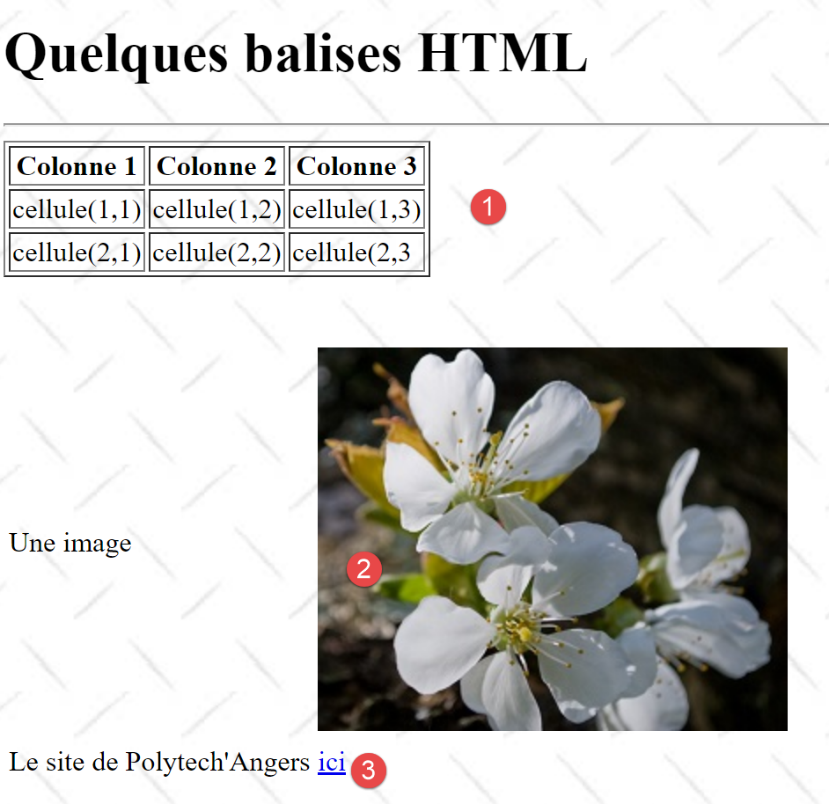
Um documento HTML é delimitado pelas balizas <html>…</html>. É composto por duas partes:
- <head>…</head>: esta é a parte não visível do documento. Fornece informações ao navegador que irá apresentar o documento. Nesta parte encontra-se frequentemente a baliza <title>…</title>, que define o texto a apresentar na barra de título do navegador. Podem também existir outras balizas, nomeadamente as que definem as palavras-chave do documento, palavras-chave posteriormente utilizadas pelos motores de busca. Nesta parte também podem encontrar-se scripts, na maioria das vezes escritos em JavaScript ou VBScript, que serão executados pelo navegador;
- <body atributos>…</body>: esta é a parte que será apresentada pelo navegador. As tags HTML contidas nesta parte indicam ao navegador a forma visual «desejada» para o documento. Cada navegador interpretará estas tags à sua maneira. Dois navegadores podem, assim, visualizar de forma diferente um mesmo documento web. Este é, geralmente, um dos desafios dos web designers;
O código HTML do nosso documento de exemplo é o seguinte:
<!DOCTYPE html>
<html xmlns="http://www.w3.org/1999/xhtml">
<head>
<meta http-equiv="Content-Type" content="text/html; charset=utf-8" />
<title>Quelques balises HTML</title>
</head>
<body style="background-image: url(/static/images/standard.jpg)">
<h1 style="text-align: left">Quelques balises HTML</h1>
<hr />
<table border="1">
<thead>
<tr>
<th>Colonne 1</th>
<th>Colonne 2</th>
<th>Colonne 3</th>
</tr>
</thead>
<tbody>
<tr>
<td>cellule(1,1)</td>
<td style="text-align: center;">cellule(1,2)</td>
<td>cellule(1,3)</td>
</tr>
<tr>
<td>cellule(2,1)</td>
<td>cellule(2,2)</td>
<td>cellule(2,3</td>
</tr>
</tbody>
</table>
<br /><br />
<table border="0">
<tr>
<td>Une image</td>
<td>
<img border="0" src="/static/images/cerisier.jpg" />
</td>
</tr>
<tr>
<td>Le site de Polytech'Angers</td>
<td><a href="http://www.polytech-angers.fr/fr/index.html">ici</a></td>
</tr>
</table>
</body>
</html>
Elemento | etiquetas e exemplos HTML |
<title>Algumas balizas HTML</title> (linha 5) o texto [Quelques balises HTML] aparecerá na barra de título do navegador que exibirá o documento | |
<hr />: exibe uma linha horizontal (linha 10) | |
<table atributos>….</table>: para definir a tabela (linhas 12, 32) <thead>…</thead>: para definir os cabeçalhos das colunas (linhas 13, 19) <tbody>…</tbody>: para definir o conteúdo da tabela (linhas 20, 31) <tr atributos>…</tr>: para definir uma linha (linhas 21, 25) <td atributos>…</td>: para definir uma célula (linha 22) exemplos: <table border="1">…</table>: o atributo border define a espessura da borda da tabela <td style="text-align: center;">célula(1,2)</td> (linha 23): define uma célula cujo conteúdo será célula(1,2). Este conteúdo será centrado horizontalmente (text-align: center). | |
<img border="0" src="/static/images/cerisier.jpg"/> (linha 38): define uma imagem sem borda (border="0") cujo ficheiro de origem é [/static/images/cerisier.jpg] no servidor web (src="/static/images/cerisier.jpg"). Se esta ligação se encontrar num documento web obtido com o URL [http://server/chemin/balises.html], então o navegador irá solicitar o URL [http://server/ static/images/cerisier.jpg] para obter a imagem aqui referenciada. | |
<a href="http://www.polytech-angers.fr/fr/index.html">aqui</a> (linha 43): faz com que o texto ici funcione como um link para o URL http://www.polytech-angers.fr/fr/index.html. | |
<body style="background-image: url(/static/images/standard.jpg)"> (linha 8): indica que a imagem que deve servir de fundo da página se encontra no URL [/static/images/standard.jpg] do servidor web. No contexto do nosso exemplo, o navegador irá solicitar o URL [http://server/static/images/standard.jpg] para obter esta imagem de fundo. |
Neste exemplo simples, verifica-se que, para construir o documento na íntegra, o navegador tem de efetuar três pedidos ao servidor:
- [http://server/chemin/balises.html] para obter o código-fonte HTML do documento;
- [http://server/static/images/cerisier.jpg] para obter a imagem cerisier.jpg;
- [http://server/static/images/standard.jpg] para obter a imagem de fundo standard.jpg;
O script [exemple_01] vai permitir-nos apresentar a página estática anterior [balises.html]:

- em [1], o script [exemple_01] que será executado;
- em [3], o documento HTML que será apresentado pelo script;
- em [2], as imagens do documento HTML;
O script [exemple_01] é o seguinte:
import os
from flask import Flask, make_response, render_template
# aplicação Flask
script_dir = os.path.dirname(os.path.abspath(__file__))
app = Flask(__name__, template_folder=f"{script_dir}/../templates", static_folder=f"{script_dir}/../static")
# Página inicial URL
@app.route('/')
def index():
# exibição da página
return make_response(render_template("balises.html"))
# main
if __name__ == '__main__':
app.config.update(ENV="development", DEBUG=True)
app.run()
- linha 7: instanciamos uma aplicação Flask. Uma aplicação Flask é uma aplicação web;
- o primeiro parâmetro é o nome atribuído à aplicação. Pode-se atribuir o nome que se quiser. Aqui, utilizou-se o atributo predefinido [__name__], cujo valor é [__main__] (linha 18);
- o segundo parâmetro é um parâmetro nomeado, ou seja, a sua posição na ordem dos parâmetros não tem importância. O parâmetro nomeado [template_folder] indica a pasta onde se encontram as páginas estáticas da aplicação web. As páginas estáticas são enviadas tal como estão para o navegador. Neste caso, as páginas estáticas serão encontradas na pasta [templates] da árvore de diretórios do projeto. Na linha 7, definimos um caminho relativo à pasta [script_dir], que contém o script [exemple_01] a ser executado;
- o terceiro parâmetro é também um parâmetro nomeado. [static_folder] designa a pasta onde se encontram os recursos do documento HTML (imagens, vídeos, etc.). Também aqui definimos um caminho relativo à pasta [script_dir] que contém o script [exemple_01] executado;
- linhas 10-14: definem-se os URL aceites pela aplicação web. Cada URL está associado a uma função que é executada quando o URL é solicitado por um navegador web;
- linha 11: o único URL da aplicação é o URL [/]. Note-se que, em [@app.route('/')], [app] é a variável inicializada na linha 7. A definição das rotas (as diferentes URL geridas pela aplicação) surge, portanto, necessariamente após a definição da aplicação [app]. Este último nome é livre;
- linhas 12-14: a função que é executada quando se solicita a URL [/] à aplicação web [exemple_01];
- linha 12: a função associada a um URL pode ter qualquer nome. Por vezes, pode ter parâmetros para recuperar elementos do URL que lhe está associado. Neste caso, não tem nenhum;
- linha 14:
- a função [render_template] devolve uma cadeia de caracteres que corresponde ao documento de texto produzido pelo seu parâmetro. Neste caso, esse parâmetro é [balises.html]. Devido ao [template_folder] da linha 7, este documento será procurado na pasta [f"{script_dir}/../templates"]. É efetivamente aí que se encontra;
- a função [make_response] gera uma resposta HTTP para o navegador que lhe solicitou o URL [/]. Vimos no parágrafo |o protocolo HTTP| que uma resposta HTTP tem dois elementos:
- cabeçalhos HTTP;
- o documento solicitado pelo navegador, neste caso um documento HTML;
Na linha 14, não foi passado nenhum parâmetro à função [make_response] para gerar cabeçalhos HTTP. A função irá, então, gerá-los por predefinição. Veremos mais tarde como definir esses cabeçalhos HTTP.
- Por fim, quando o navegador solicita o URL à aplicação Flask, obtém a página [balises.html];
- linhas 17-20: estas linhas servem para iniciar o servidor web que irá executar a aplicação web [exemple_01];
- linha 18: esta condição só é verdadeira quando o script [exemple_01] é executado numa consola;
- linha 19: a aplicação [app] da linha 7 é configurada:
- o parâmetro denominado [ENV="development"] coloca o servidor web em modo de desenvolvimento: assim que o programador altera um elemento da aplicação, esta é regenerada e enviada para o servidor web. O programador não precisa de solicitar uma nova execução;
- o parâmetro denominado [DEBUG=True] permitirá ao programador definir pontos de paragem no código da aplicação;
- linha 20: a aplicação web é iniciada: é instanciado um servidor web e a aplicação web é implementada nesse servidor para responder aos pedidos dos clientes web;
Eis um exemplo de execução:

Os seguintes registos aparecem então na consola de execução:
C:\Data\st-2020\dev\python\cours-2020\python3-flask-2020\venv\Scripts\python.exe C:/Data/st-2020/dev/python/cours-2020/python3-flask-2020/flask/01/main/exemple_01.py
* Serving Flask app "exemple_01" (lazy loading)
* Environment: development
* Debug mode: on
* Restarting with stat
* Debugger is active!
* Debugger PIN: 334-263-283
* Running on http://127.0.0.1:5000/ (Prima CTRL+C para sair)
- linha 2: o servidor apresenta o script executado;
- linha 3: estamos no modo de desenvolvimento;
- linhas 4-5: o servidor deteta que foi iniciado no modo [debug]. Em seguida, reinicia (linha 5). O modo [debug] torna, portanto, o arranque um pouco mais lento;
- linha 8: o URL, onde a aplicação web implementada [exemple_01] está disponível;
Com um navegador da Web, acedamos ao URL [http://127.0.0.1:5000/]:

Obtenemos, de facto, o documento [balises.html] esperado.
22.2.2. script [exemple_02]: gerar dinamicamente um documento HTML

O script [exemple_02] [1] irá gerar o seguinte documento [exemple_02.html] [2]:
<!DOCTYPE html>
<html lang="fr">
<head>
<meta charset="UTF-8">
<title>{{page.title}}</title>
</head>
<body>
<b>{{page.contents}}</b>
</body>
</html>
Este documento é dinâmico porque o seu conteúdo só é totalmente conhecido no momento em que o servidor web o disponibiliza. De facto, nas linhas 5 e 8 encontram-se dois elementos desconhecidos no momento da criação da página. Estes só são conhecidos no momento em que a página é enviada a um cliente. São então substituídos pelos seus valores, que são cadeias de caracteres.
- linhas 5 e 8: a sintaxe {{expressão}} é uma sintaxe da linguagem de modelos Jinja2 [https://jinja.palletsprojects.com/en/2.11.x/]. Antes de a página ser enviada a um cliente, os elementos dinâmicos da página (linhas 5 e 8) são avaliados e substituídos pelos seus valores;
- linha 5: utilizou-se a sintaxe [page.title]. Partiu-se, portanto, do princípio de que, na geração da página antes do seu envio, uma variável [page] é conhecida; veremos como. Na sintaxe {{expressão}}, podem ser utilizados os nomes de variáveis que se desejar. Nas linhas 5 e 8, poderíamos assim ter {{title}} e {{contents}}. Poderíamos então dizer que [title] e [contents] são parâmetros da página. A seguir, utilizaremos sempre a mesma técnica:
- o único parâmetro da página será um dicionário [page];
- os atributos desse dicionário serão utilizados na página. Aqui, [page.title] na linha 5 e [page.contents] na linha 8;
A aplicação web [exemple_02.py] é a seguinte:
from flask import Flask, make_response, render_template
# aplicação Flask
script_dir = os.path.dirname(os.path.abspath(__file__))
app = Flask(__name__, template_folder=f"{script_dir}/../templates", static_folder=f"{script_dir}/../static")
# Página inicial URL
@app.route('/')
def index():
# conteúdo da página na forma de um dicionário
page = {"title": "un titre", "contents": "un contenu"}
# exibição da página
return make_response(render_template("exemple_02.html", page=page))
# main
if __name__ == '__main__':
app.config.update(ENV="development", DEBUG=True)
app.run()
- já explicámos no exemplo anterior as linhas 4-5 e 18-20. Continuaremos a utilizar este esquema nos nossos exemplos;
- linha 9: o único URL servido pela aplicação web é o URL /;
- linha 14: o documento servido à URL / é o documento [exemple_02.html] que acabámos de comentar. Sabemos que tem um parâmetro, um dicionário chamado [page];
- linha 12: definimos o dicionário que será passado como parâmetro à página [exemple_02.html]. Pode ter qualquer nome. No entanto, deve possuir os atributos [title, contents] utilizados no documento HTML;
- linha 14: a função [render_template] tem como função gerar a cadeia de caracteres do documento [exemple_02.html]. Como este é um documento parametrizado, transmitimos à função [render_template] o(s) parâmetro(s) esperado(s). Fazemo-lo aqui atribuindo um valor ao parâmetro denominado [page]. Na operação [page=page]:
- à esquerda do sinal =, temos o parâmetro [page] utilizado no documento [exemple_02.html];
- à direita do sinal =, temos o valor [page] definido na linha 12;
- De um modo geral, se um documento HTML tiver os parâmetros [param1, param2, …, paramn], os respetivos valores serão passados para a função [render_template] na forma [render_template(document, param1=valeur1, param2=valeur2, …];
Antes de executar o [exemple_02], temos de interromper a execução do [exemple_01]:
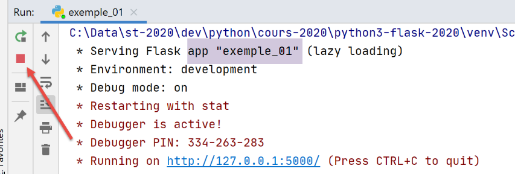
Se, durante a execução de um script 1, tiver a impressão de que é um script 2 que está a ser executado, isso deve-se provavelmente ao facto de este ainda estar em execução. Para regressar a um estado conhecido, pode interromper todos os processos em execução no PyCharm (no canto superior direito da janela PyCharm):

Executemos o script [exemple_02]:

Os registos da consola são então os seguintes:
C:\Data\st-2020\dev\python\cours-2020\python3-flask-2020\venv\Scripts\python.exe C:/Data/st-2020/dev/python/cours-2020/python3-flask-2020/flask/01/main/exemple_02.py
* Serving Flask app "exemple_02" (lazy loading)
* Environment: development
* Debug mode: on
* Restarting with stat
* Debugger is active!
* Debugger PIN: 334-263-283
* Running on http://127.0.0.1:5000/ (Prima CTRL+C para sair)
A linha 8 indica a porta de implementação (5000) da aplicação [exemple_02] (linha 1) na máquina [localhost]. Como as linhas anteriores são sempre as mesmas, não as voltaremos a apresentar.
Com um navegador, acedemos à página URL [http://localhost:5000/]:

- a expressão {{page.title}} produziu [1];
- a expressão {{page.contents}} produziu [2];
22.2.3. script [exemple_03]: utilizar fragmentos de página
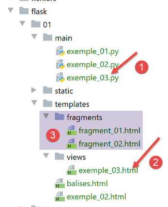
- em [1], o script [exemple_03.py] irá gerar o documento dinâmico [exemple_03.html] [2]. Este será construído a partir dos fragmentos de página [fragment_01.html, fragment_02.html] e [3];
O documento [exemple_03.html] será o seguinte:
<!DOCTYPE html>
<html lang="fr">
{% include "fragments/fragment_01.html" %}
<body>
{% include "fragments/fragment_02.html" %}
</body>
</html>
- nas linhas 3 e 5, utiliza-se a diretiva [include] do Jinja2 para incluir no documento elementos externos ao mesmo;
- a sintaxe é {% include … %}. O parâmetro da diretiva [include] é o caminho do documento a incorporar. Este caminho é relativo ao parâmetro [template_folder] da aplicação Flask:
app = Flask(__name__, template_folder="../templates", static_folder="../static")
Portanto, neste caso, os caminhos dos documentos são medidos em relação à pasta [templates].
O fragmento [fragment_01.html] (os nomes são, obviamente, livres) é o seguinte:
<meta charset="UTF-8">
<title>{{page.title}}</title>
O fragmento [fragment_02.html] é o seguinte:
<b>{{page.contents}}</b>
Se reconstituirmos o documento [exemple_03.html] com estes fragmentos, obtemos o seguinte código:
<!DOCTYPE html>
<html lang="fr">
<meta charset="UTF-8">
<title>{{page.title}}</title>
<body>
<b>{{page.contents}}</b>
</body>
</html>
Temos, portanto, um documento idêntico ao [exemple_02.html], mas construído a partir de fragmentos.
O script web [exemple_03.py] é o seguinte:
import os
from flask import Flask, make_response, render_template
# aplicação Flask
script_dir = os.path.dirname(os.path.abspath(__file__))
app = Flask(__name__, template_folder=f"{script_dir}/../templates", static_folder=f"{script_dir}/../static")
# Página inicial URL
@app.route('/')
def index():
# conteúdo da página
page = {"title": "un autre titre", "contents": "un autre contenu"}
# exibição da página
return make_response(render_template("views/exemple_03.html", page=page))
# função principal
if __name__ == '__main__':
app.config.update(ENV="development", DEBUG=True)
app.run()
O código é análogo ao de [exemple_02.py]. Na linha 16, mostra-se como é possível referenciar documentos presentes em subpastas de [template_folder], da linha 7.
A execução do script [exemple_03.py] apresenta os seguintes resultados no navegador:

22.3. scripts [flask/02]: serviço web de data e hora

O documento [date_time_server.html] é o seguinte:
<!DOCTYPE html>
<html lang="fr">
<head>
<meta charset="UTF-8">
<title>Date et heure du moment</title>
</head>
<body>
<b>Date et heure du moment : {{page.date_heure}}</b>
</body>
</html>
- linha 8: a página aceita o parâmetro [page.date_heure];
O serviço web [date_time_server.py] é o seguinte:
# importações
import os
import time
from flask import Flask, make_response, render_template
# aplicação Flask
script_dir = os.path.dirname(os.path.abspath(__file__))
app = Flask(__name__, template_folder=f"{script_dir}")
# Página inicial URL
@app.route('/')
def index():
# envio da hora ao cliente
# time.localtime: número de milissegundos desde 01/01/1970
# time.strftime permite formatar a hora e a data
# formato de exibição da data e hora
# d: dia com 2 dígitos
# m: mês com 2 dígitos
# y: ano com 2 dígitos
# H: hora 0,23
# M: minutos
# S: segundos
# data/hora atual
time_of_day = time.strftime('%d/%m/%y %H:%M:%S', time.localtime())
# gera-se o documento a enviar ao cliente
page = {"date_heure": time_of_day}
document = render_template("date_time_server.html", page=page)
print("document", type(document), document)
# resposta HTTP ao cliente
response = make_response(document)
print("response", type(response), response)
return response
# apenas manual
if __name__ == '__main__':
app.config.update(ENV="development", DEBUG=True)
app.run()
- linha 13: a aplicação web apenas serve o URL /;
- linhas 15-24: explicam como obter a data e a hora e como as apresentar;
- linha 27: cadeia de caracteres que representa a data e a hora atuais;
- linhas 28-30: gera-se o documento dinâmico [date_time_server.html], passando-lhe o dicionário [page] da linha 29;
- linha 31: exibe-se o tipo de [document] e o próprio documento. Pretende-se mostrar que se trata de uma cadeia de caracteres;
- linha 33: gera-se a resposta HTTP que será enviada ao cliente (ainda não foi enviada);
- linha 34: exibe-se o seu tipo e o seu valor;
- linha 35: a resposta HTTP é enviada ao cliente;
A execução do script produz o seguinte resultado num navegador:

Os registos na consola são os seguintes:
C:\Data\st-2020\dev\python\cours-2020\python3-flask-2020\venv\Scripts\python.exe C:\Data\st-2020\dev\python\cours-2020\python3-flask-2020\flask\02\date_time_server.py
* Serving Flask app "date_time_server" (lazy loading)
* Environment: development
* Debug mode: on
* Restarting with stat
* Debugger is active!
* Debugger PIN: 334-263-283
* Running on http://127.0.0.1:5000/ (Prima CTRL+C para sair)
127.0.0.1 - - [10/Jul/2020 09:32:09] "GET / HTTP/1.1" 200 -
document <class 'str'> <!DOCTYPE html>
<html lang="fr">
<head>
<meta charset="UTF-8">
<title>Date et heure du moment</title>
</head>
<body>
<b>Date et heure du moment : 10/07/20 09:42:33</b>
</body>
</html>
response <class 'flask.wrappers.Response'> <Response 195 bytes [200 OK]>
- linha 10: verifica-se que o tipo do valor devolvido por [render_template] é do tipo [str]. Esta cadeia de caracteres não é outra senão o documento [date_time_server.html], uma vez interpretado (linhas 10-19);
- linha 20: verifica-se que o tipo do valor devolvido por [make_response] é do tipo [flask.wrappers.Response]. A função [Response.__str__] foi implicitamente chamada para apresentar o objeto [Response]. A cadeia de caracteres devolvida por esta função fornece duas informações sobre a resposta HTTP que vai ser gerada:
- o documento enviado tem 195 octetos;
- o estado da resposta HTTP é [200 OK]. Veremos mais adiante que temos acesso a este código de estado;
22.4. scripts [flask/03]: serviços web que geram texto simples
Vimos num exemplo anterior que o serviço web fornecia o seguinte documento:
<!DOCTYPE html>
<html lang="fr">
<head>
<meta charset="UTF-8">
<title>Date et heure du moment</title>
</head>
<body>
<b>Date et heure du moment : {{page.date_heure}}</b>
</body>
</html>
Um cliente web poderá estar interessado apenas na informação [page.date_heure] da linha 8 e não na formatação HTML que a rodeia. O serviço web poderá fornecer essa informação como uma simples cadeia de caracteres. Apresentaremos aqui exemplos deste tipo de serviço web.
22.4.1. script [main_01]

- [main_01] é o serviço web;
- [config] é o script de configuração da aplicação web;
- o serviço web utiliza algumas das entidades definidas em [2];
O script [config] é o seguinte:
def configure():
# caminho absoluto de referência dos caminhos relativos da configuração
rootDir = "C:/Data/st-2020/dev/python/cours-2020/python3-flask-2020"
# dependências da aplicação
absolute_dependencies = [
# Pessoas, Ferramentas, MyException
f"{rootDir}/classes/02/entities",
]
# define-se o syspath
from myutils import set_syspath
set_syspath(absolute_dependencies)
# carregamos a configuração
return {}
A principal função desta configuração é definir o Python Path do serviço web. É necessário que as entidades [2] (linha 8) possam ser encontradas.
O script web [main_01] é o seguinte:
# configurar a aplicação
import config
config=config.configure()
# importações
from flask import Flask, make_response
from flask_api import status
# dependências
from Personne import Personne
# aplicação Flask (sem documentos estáticos aqui)
app = Flask(__name__)
# Página inicial URL
@app.route('/')
def index():
# uma pessoa
personne = Personne().fromdict({"prénom": "Aglaë", "nom": "de la Hûche", "âge": 87})
# resposta HTTP
response = make_response(str(personne))
# cabeçalhos HTTP
response.headers.set("Content-type", "application/json; charser=utf8")
# envia-se a resposta HTTP
return response, status.HTTP_200_OK
# apenas main
if __name__ == '__main__':
# inicia-se o servidor
app.config.update(ENV="development", DEBUG=True)
app.run()
- linhas 1-3: o Python Path da aplicação é definido;
- linhas 5-10: importam-se os elementos de que o script necessita;
- linha 17: o serviço web apenas serve o URL /;
- linha 20: cria-se um objeto [Personne];
- linha 22: cria-se uma resposta HTTP com a cadeia de caracteres que representa a pessoa. A função [Personne.__str__] será chamada. Esta devolve a cadeia jSON do dicionário [asdict] da pessoa (ver |classe BaseEntity|). O parâmetro da função [make_response] é o documento de texto enviado ao cliente, ou seja, neste caso, a cadeia jSON de uma pessoa;
- linha 24: colocamos nos cabeçalhos HTTP da resposta um cabeçalho [Content-type] que indica ao cliente que tipo de documento irá receber, neste caso um documento jSON codificado em UTF-8;
- linha 26: devolve-se um tuplo de dois elementos:
- a resposta ao cliente, os cabeçalhos HTTP e o documento;
- o código de estado da resposta. Aqui, pretendemos definir o código de estado [200 OK]. Os diferentes códigos de estado são definidos por constantes no módulo [flask_api], importado na linha 7;
O módulo [flask_api] não está disponível de forma nativa. É necessário instalá-lo. Faz-se isso num terminal PyCharm:
(venv) C:\Data\st-2020\dev\python\cours-2020\python3-flask-2020\inet\utilitaires>pip install flask_api
Collecting flask_api
Downloading Flask_API-2.0-py3-none-any.whl (119 kB)
|| 119 kB 544 kB/s
Requirement already satisfied: Flask>=1.1 in c:\data\st-2020\dev\python\cours-2020\python3-flask-2020\venv\lib\site-packages (from flask_api) (1.1.2)
Requirement already satisfied: Jinja2>=2.10.1 in c:\data\st-2020\dev\python\cours-2020\python3-flask-2020\venv\lib\site-packages (from Flask>=1.1->flask_api) (2.11.2)
Requirement already satisfied: Werkzeug>=0.15 in c:\data\st-2020\dev\python\cours-2020\python3-flask-2020\venv\lib\site-packages (from Flask>=1.1->flask_api) (1.0.1)
Requirement already satisfied: click>=5.1 in c:\data\st-2020\dev\python\cours-2020\python3-flask-2020\venv\lib\site-packages (from Flask>=1.1->flask_api) (7.1.2)
Requirement already satisfied: itsdangerous>=0.24 in c:\data\st-2020\dev\python\cours-2020\python3-flask-2020\venv\lib\site-packages (from Flask>=1.1->flask_api) (1.1.0)
Requirement already satisfied: MarkupSafe>=0.23 in c:\data\st-2020\dev\python\cours-2020\python3-flask-2020\venv\lib\site-packages (from Jinja2>=2.10.1->Flask>=1.1->flask_api) (1.1.1
)
Installing collected packages: flask-api
Successfully installed flask-api-2.0
Ao executar o script web [main_01], obtêm-se os seguintes resultados num navegador:
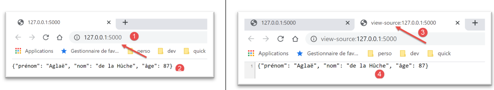
- em [2], a cadeia jSON recebida;
- no [3-4], exibe-se o conteúdo do documento recebido. Verifica-se que não existe qualquer formatação HTML, apenas a cadeia jSON;
Vejamos agora o papel do cabeçalho [Content-Type] enviado ao cliente pelo serviço web. Colocamos o navegador no modo de programador (normalmente F12) e solicitamos novamente o mesmo URL. Segue-se uma captura de ecrã do navegador Chrome:

- em [1], selecionar o separador [Network];
- em [2, 4]: o URL solicitado pelo navegador;
- em [3], selecione o separador [Headers] (cabeçalhos HTTP);
- em [5], o código de estado da resposta HTTP recebida;
- em [6], o cabeçalho que indica ao cliente que irá receber um texto jSON. Isto permite que o cliente se adapte à resposta. Assim, o tipo de letra utilizado pelo Chrome para apresentar uma resposta jSON ou uma resposta de texto básico não é o mesmo;

- em [8], seleciona-se o separador [Response] para aceder ao documento enviado pelo serviço web, neste caso uma simples cadeia de caracteres jSON;
22.4.2. Postman
[Postman] é a ferramenta que nos permitirá consultar os diferentes URL de uma aplicação web. Permite-nos:
- utilizar qualquer URL: estas são criadas manualmente;
- enviar pedidos ao servidor web através de um GET, POST, PUT, OPTIONS…;
- especificar os parâmetros do GET ou do POST;
- definir os cabeçalhos HTTP da solicitação;
- receber uma resposta no formato jSON, XML, HTML,
- ter acesso aos cabeçalhos HTTP da resposta. Assim, tem-se acesso à resposta completa HTTP do servidor;
O [Postman] é uma excelente ferramenta pedagógica para compreender a comunicação cliente/servidor do protocolo HTTP.
O [Postman] está disponível no URL [https://www.getpostman.com/downloads/]. Proceda à instalação da sua versão do [Postman]. Durante a instalação, ser-lhe-á pedido que crie uma conta: esta não será necessária neste caso. A conta [Postman] serve para sincronizar diferentes dispositivos, de modo a que a configuração de um seja replicada noutro. Nada disto é necessário neste caso.
Uma vez instalado, o [Postman] apresenta a seguinte interface:

- no [2-3], tem-se acesso às definições do produto;

- no [6], a versão utilizada neste documento;
Vamos utilizar aqui o [Postman] para testar o serviço web jSON anterior:
- executamos o script [flask/03/main_01];
- depois, solicitamos o URL [http://localhost:5000/] com o Postman;
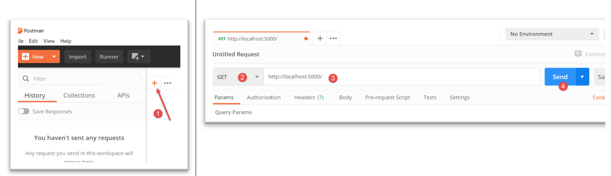
- no [1], criamos um pedido;
- no [2], será uma solicitação HTTP GET;
- em [3], o URL do serviço web consultado;
- em [4], envia-se o pedido ao serviço web;

- em [5], seleciona-se o separador [Body], que apresenta o documento recebido;
- em [6], seleciona-se o separador [Pretty], que apresenta o documento recebido com uma formatação adequada, neste caso, uma formatação adequada a uma cadeia jSON;
- em [7], o documento jSON recebido;
- em [8-9], o documento recebido sem formatação;

- em [10], são apresentados os cabeçalhos HTTP recebidos pelo Postman;
- em [11], o estado HTTP da resposta recebida;
- em [12], os cabeçalhos HTTP recebidos;
- em [13], o cabeçalho [Content-type] que permitiu ao Postman saber que iria receber uma cadeia jSON. O Postman utilizou esta informação para formatar, de certa forma, o documento recebido;
Existe outra forma de utilizar o Postman. Consiste em utilizar a consola do Postman (Ctrl-Alt-C). Esta permite visualizar o diálogo cliente/servidor. Para além da sequência Ctrl-Alt-C, a consola do Postman está disponível através de um ícone no canto inferior esquerdo da janela principal do Postman:
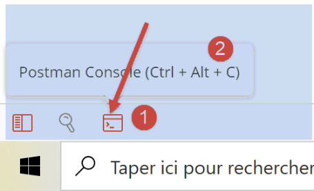
A consola do Postman regista as interações cliente/servidor que ocorrem quando uma solicitação do Postman é executada:

- em [3], a lista de pedidos efetuados pelo Postman desde que foi iniciado. Os mais recentes encontram-se no final da lista;
- em [4], a solicitação HTTP efetuada pelo Postman;
- em [5-6], a resposta HTTP enviada pelo servidor web;
- em [7], é possível ver os registos no modo [raw], ou seja, sem qualquer formatação;
No modo [raw], a janela da consola fica assim:

- em [8], a solicitação HTTP enviada pelo Postman ao servidor web;
- em [9], a resposta HTTP enviada pelo servidor web;
- em [10], é possível regressar ao modo [pretty logs];
Para facilitar as explicações, iremos numerar as linhas obtidas a partir da consola do Postman.
Para o cliente:
Para o servidor:
A partir de agora, utilizaremos principalmente:
- [Postman] como cliente web;
- a consola [Postman] em [raw mode] para explicar a interação cliente/servidor;
22.4.3. script [main_02]

O script web [main_02] é o seguinte:
# configura-se a aplicação
import config
config=config.configure()
# importações
from flask import Flask, make_response
from flask_api import status
# dependências
from Personne import Personne
# aplicação Flask
app = Flask(__name__)
# Página inicial URL
@app.route('/')
def index():
# uma pessoa
personne = Personne().fromdict({"prénom": "Aglaë", "nom": "de la Hûche", "âge": 87})
# conteúdo
response = make_response(f"personne[{personne.prénom}, {personne.nom}, {personne.âge}]")
# cabeçalhos HTTP
response.headers.set("Content-Type", "text/plain; charset=utf8")
# resposta HTTP
return response, status.HTTP_200_OK
# apenas principal
if __name__ == '__main__':
# inicia-se o servidor
app.config.update(ENV="development", DEBUG=True)
app.run()
- O script [main_02] é análogo ao script [main_01]. Difere deste em dois pontos:
- linha 22: o documento enviado ao cliente é uma cadeia de caracteres bruta, e não uma cadeia jSON;
- linha 24: isto reflete-se no cabeçalho HTTP [Content-Type], que indica o tipo [text/plain] para o documento;
Executamos o script web [main_02] e, em seguida, utilizamos o [Postman] para o consultar:

- em [1-3], é enviada a solicitação ao serviço web;
- em [5], o estado OK da resposta;
- em [4, 6], os cabeçalhos HTTP da resposta;
- em [7], o cabeçalho [Content-Type];
- em [8-10], o documento enviado pelo serviço web, uma cadeia de caracteres;
A consola Postman apresenta os seguintes registos:
Pedido do cliente:
Resposta do servidor:
HTTP/1.0 200 OK
Content-Type: text/plain; charset=utf8
Content-Length: 34
Server: Werkzeug/1.0.1 Python/3.8.1
Date: Mon, 13 Jul 2020 17:34:22 GMT
personne[Aglaë, de la Hûche, 87]
22.4.4. script [main_03]

O script web [main_03] é o seguinte:
# configuração da aplicação
import config
config = config.configure()
# importações
from flask import Flask, make_response
from flask_api import status
# dependências
from MyException import MyException
from Personne import Personne
# aplicação Flask
app = Flask(__name__)
# Página inicial URL
@app.route('/')
def index():
# uma pessoa incorreta
msg_erreur = None
try:
personne = Personne().fromdict({"prénom": "", "nom": "", "âge": 87})
except MyException as erreur:
msg_erreur = f"{erreur}"
# erro?
if msg_erreur:
response = make_response(msg_erreur)
status_code = status.HTTP_500_INTERNAL_SERVER_ERROR
else:
response = make_response(f"personne[{personne.prénom}, {personne.nom}, {personne.âge}]")
status_code = status.HTTP_200_OK
# cabeçalhos HTTP
response.headers.set("Content-Type", "text/plain; charset=utf8")
# resposta HTTP
return response, status_code
# apenas principal
if __name__ == '__main__':
# iniciar o servidor
app.config.update(ENV="development", DEBUG=True)
app.run()
- linha 23: provoca-se um erro ao instanciar uma pessoa incorreta;
- linhas 27-29: devido ao erro:
- linha 28: prepara-se uma resposta HTTP com o conteúdo da mensagem de erro;
- linha 29: atribui-se ao código de estado HTTP um valor de erro [500 Internal Server Error];
- linha 34: indica-se ao cliente que lhe está a ser enviado um texto simples;
- linha 36: envia-se a resposta HTTP ao cliente;
Iniciamos o serviço web [main_03] e utilizamos o Postman para o interrogar:

- em [1-3], enviamos a solicitação;
- em [4], obtém-se uma resposta com um código de estado [500 INTERNAL SERVER ERROR];
- em [5-7]: a resposta é um texto que descreve o erro que ocorreu;

- em [8-10], os cabeçalhos HTTP da resposta do serviço web;
Na consola do Postman, os resultados no modo [raw] são os seguintes:
Pedido do cliente:
Resposta do servidor:
HTTP/1.0 500 INTERNAL SERVER ERROR
Content-Type: text/plain; charset=utf8
Content-Length: 74
Server: Werkzeug/1.0.1 Python/3.8.1
Date: Mon, 13 Jul 2020 17:39:24 GMT
MyException[11, Le prénom doit être une chaîne de caractères non vide]
22.5. Scripts [flask/04]: informações incluídas na solicitação
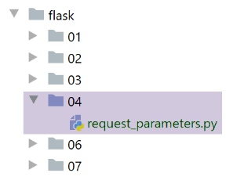
O script [request_parameters.py] tem como objetivo demonstrar que o serviço web tem acesso a várias informações encapsuladas na solicitação de um cliente web. O código é o seguinte:
# importação
from flask import Flask, make_response, request
from flask_api import status
# aplicação Flask
app = Flask(__name__)
# Página inicial URL
@app.route('/', methods=['GET', 'POST'])
def index():
# parâmetros da solicitação
request_data = {}
request_data["environ"] = f"{request.environ}"
request_data["path"] = request.path
request_data["full_path"] = request.full_path
request_data["script_root"] = request.script_root
request_data["url"] = request.url
request_data["base_url"] = request.base_url
request_data["url_root"] = request.url_root
request_data["accept_charsets"] = request.accept_charsets
request_data["accept_encodings"] = request.accept_encodings
request_data["accept_languages"] = request.accept_languages
request_data["accept_mimetypes"] = request.accept_mimetypes
request_data["args"] = request.args
request_data["content_encoding"] = request.content_encoding
request_data["content_length"] = request.content_length
request_data["content_type"] = request.content_type
request_data["endpoint"] = request.endpoint
request_data["files"] = request.files
request_data["form"] = request.form
request_data["host"] = request.host
request_data["method"] = request.method
request_data["query_string"] = request.query_string.decode()
request_data["referrer"] = request.referrer
request_data["remote_addr"] = request.remote_addr
request_data["remote_user"] = request.remote_user
request_data["scheme"] = request.scheme
request_data["script_root"] = request.script_root
request_data["user_agent"] = f"{request.user_agent}"
request_data["values"] = request.values
# resposta HTTP
response = make_response(request_data)
# cabeçalhos HTTP
response.headers["Content-Type"] = "application/json; charset=utf-8"
# envio da resposta HTTP
return response, status.HTTP_200_OK
# main
if __name__ == '__main__':
app.config.update(ENV="development", DEBUG=True)
app.run()
- linha 9: introduzimos uma alteração. Especificamos quais são os verbos permitidos na solicitação do cliente. O Postman fornece a lista:

Os dois primeiros, [GET, POST], são os mais utilizados e serão também os únicos a serem utilizados neste documento. Voltando à linha 9 do código, o parâmetro [methods] contém a lista dos métodos da lista acima autorizados pelo URL. Na ausência deste parâmetro, apenas o método [GET] é autorizado. Foi isso que aconteceu até agora;
- linha 12: vamos criar o dicionário [request_data];
- linha 13: o pedido do cliente está disponível num objeto predefinido [request], importado na linha 2, do tipo [werkzeug.local.LocalProxy]. As linhas seguintes recuperam vários atributos desse objeto;
- em vez de detalhar cada atributo do objeto [request], vamos executar este código e observar os resultados. Assim, compreenderemos melhor o significado dos diferentes atributos apresentados;
- linha 42: o dicionário [request_data] será o conteúdo da resposta HTTP. Recorde-se que este deve ser texto. O Flask transforma automaticamente os dicionários em cadeias de caracteres jSON;
- linha 44: informa-se ao cliente que irá receber jSON;
- linha 46: envia-se a resposta ao cliente;
Com o cliente Postman, enviamos o seguinte pedido ao serviço web anterior:

- em [1-2], a solicitação enviada;
- em [2], a solicitação está configurada. Os parâmetros são anexados ao URL na forma [ ?param1=valeur1¶m2=valeur2]. Existem duas formas de introduzir estes parâmetros no Postman:
- escrevê-los diretamente no URL;
- introduzi-los no [3-4];
Ambos os métodos são equivalentes;
Adicionamos outros parâmetros à solicitação:

- no [5-7], adicionamos parâmetros no corpo (=body) da solicitação. Enquanto os parâmetros do URL são visíveis para o utilizador de um navegador web, os que fazem parte do corpo da solicitação não são visíveis. O navegador (ou o Postman, neste caso) envia-os para o servidor após os cabeçalhos HTTP. A solicitação do cliente web tem, então, a mesma estrutura que a resposta do servidor web: cabeçalhos HTTP seguidos de um documento. Isto fará com que apareçam dois novos cabeçalhos HTTP na solicitação do cliente:
- [Content-Type]: o cliente indica ao servidor o tipo de documento que está a enviar;
- [Content-Length]: o tamanho do documento em bytes;
- em [6], a codificação a utilizar para os parâmetros declarados em [7]. Estes podem ser codificados de várias formas. [x-www-form-urlencoded] é um método frequentemente utilizado pelos navegadores;
Pode-se ver a solicitação que será gerada:

A resposta a esta solicitação é a seguinte:

- em [1-5], recebemos uma cadeia jSON [3];
- o que geralmente interessa ao serviço web são os parâmetros de URL [ ?param1=valeur1¶m2=valeur2] e aqueles que foram transmitidos no corpo da solicitação (documento). É assim, em geral, que o cliente lhe transmite informações. Vemos em [5] que os parâmetros de URL estão disponíveis em [request.args];
O resto da resposta é o seguinte:

- em [9], os atributos dos parâmetros incluídos no corpo da solicitação:
- [content_type] é o tipo do documento que acompanha a solicitação. Vimos que este documento continha informações do tipo [param=valeur] codificadas na forma [x-www-form-urlencoded]. O Postman gerou, portanto, um cabeçalho HTTP [Content-Type] indicando a natureza do documento;
- [content_length] é o tamanho, em bytes, deste documento;
- em [10], o atributo [request.environ] contém diversas informações sobre o ambiente em que a solicitação do cliente é processada. A maioria dessas informações encontra-se nos outros atributos do objeto [request];
- em [11], os parâmetros presentes no corpo da solicitação estão disponíveis no atributo [request.form];
- em [12], o método utilizado para enviar a solicitação, neste caso o método [GET];
- em [13], o atributo [request.values] é o dicionário de todos os parâmetros, tanto os de URL como os do corpo do documento. Para obter os parâmetros da solicitação, utilizar-se-á o atributo:
- [request.args] para obter os que estão presentes no URL;
- [request.form] para obter os que estão presentes no corpo do documento;
Na consola do Postman, os registos são os seguintes:
Pedido do cliente:
- linha 9: o tipo do documento enviado na linha 12 para o servidor;
- linha 11: os cabeçalhos HTTP da solicitação estão separados do documento enviado por uma linha em branco. É assim que o servidor identifica o fim dos cabeçalhos HTTP do cliente;
- linha 12: o documento «codificado por URL». Todos os caracteres acentuados foram codificados;
A resposta do cliente é a seguinte:
HTTP/1.0 200 OK
Content-Type: application/json; charset=utf-8
Content-Length: 2433
Server: Werkzeug/1.0.1 Python/3.8.1
Date: Wed, 15 Jul 2020 06:09:09 GMT
{
"accept_charsets": [],
"accept_encodings": [
[
"gzip",
1
],
[
"deflate",
1
],
[
"br",
1
]
],
"accept_languages": [],
"accept_mimetypes": [
[
"*/*",
1
]
],
"args": {
"param1": "valeur1",
"param2": "valeur2"
},
"base_url": "http://localhost:5000/",
"content_encoding": null,
"content_length": 60,
"content_type": "application/x-www-form-urlencoded",
"endpoint": "index",
"environ": "{'wsgi.version': (1, 0), 'wsgi.url_scheme': 'http', 'wsgi.input': <_io.BufferedReader name=908>, 'wsgi.errors': <_io.TextIOWrapper name='<stderr>' mode='w' encoding='utf-8'>, 'wsgi.multithread': True, 'wsgi.multiprocess': False, 'wsgi.run_once': False, 'werkzeug.server.shutdown': <function WSGIRequestHandler.make_environ.<locals>.shutdown_server at 0x00000173CA6E5160>, 'SERVER_SOFTWARE': 'Werkzeug/1.0.1', 'REQUEST_METHOD': 'GET', 'SCRIPT_NAME': '', 'PATH_INFO': '/', 'QUERY_STRING': 'param1=valeur1¶m2=valeur2', 'REQUEST_URI': '/?param1=valeur1¶m2=valeur2', 'RAW_URI': '/?param1=valeur1¶m2=valeur2', 'REMOTE_ADDR': '127.0.0.1', 'REMOTE_PORT': 50592, 'SERVER_NAME': '127.0.0.1', 'SERVER_PORT': '5000', 'SERVER_PROTOCOL': 'HTTP/1.1', 'HTTP_USER_AGENT': 'PostmanRuntime/7.26.1', 'HTTP_ACCEPT': '*/*', 'HTTP_CACHE_CONTROL': 'no-cache', 'HTTP_POSTMAN_TOKEN': 'cbfac6aa-71a0-4076-a0c3-91d36d74a4c0', 'HTTP_HOST': 'localhost:5000', 'HTTP_ACCEPT_ENCODING': 'gzip, deflate, br', 'HTTP_CONNECTION': 'keep-alive', 'CONTENT_TYPE': 'application/x-www-form-urlencoded', 'CONTENT_LENGTH': '60', 'werkzeug.request': <Request 'http://localhost:5000/?param1=valeur1¶m2=valeur2' [GET]>}",
"files": {},
"form": {
"nom": "s\u00e9l\u00e9n\u00e9",
"pr\u00e9nom": "agla\u00eb",
"\u00e2ge": "77"
},
"full_path": "/?param1=valeur1¶m2=valeur2",
"host": "localhost:5000",
"method": "GET",
"path": "/",
"query_string": "param1=valeur1¶m2=valeur2",
"referrer": null,
"remote_addr": "127.0.0.1",
"remote_user": null,
"scheme": "http",
"script_root": "",
"url": "http://localhost:5000/?param1=valeur1¶m2=valeur2",
"url_root": "http://localhost:5000/",
"user_agent": "PostmanRuntime/7.26.1",
"values": {
"nom": "s\u00e9l\u00e9n\u00e9",
"param1": "valeur1",
"param2": "valeur2",
"pr\u00e9nom": "agla\u00eb",
"\u00e2ge": "77"
}
}
- linhas 1-5: os cabeçalhos HTTP da resposta, terminados por uma linha em branco;
- linhas 41-45: os elementos acentuados foram codificados como UTF-8;
Se agora utilizarmos o método [POST] para enviar o mesmo pedido com os mesmos parâmetros, obteremos a mesma resposta, com a única diferença de que, no [12], teremos o [‘method’ : ‘POST’].
Então, qual é a diferença entre os métodos GET e POST? A diferença é mínima e resultou da forma como os navegadores os utilizaram historicamente:
- os parâmetros no URL são práticos porque um URL assim configurado pode servir de ligação num documento HTML. O utilizador também pode alterar os parâmetros por si próprio para obter respostas diferentes do servidor. Neste caso, os navegadores utilizam habitualmente o método [GET] e não há corpo (content_length=0) na solicitação enviada ao servidor web (sem parâmetros ocultos);
- por vezes, não se pretende que os parâmetros sejam exibidos no URL. É o caso das palavras-passe enviadas para o servidor. Além disso, o tamanho ocupado pelos parâmetros do URL é limitado (um URL não pode exceder um determinado tamanho). Os parâmetros do corpo da solicitação não têm essa limitação. Além disso, muitos parâmetros no URL tornam-no ilegível. Tomemos o caso comum de um formulário de registo num site. Historicamente, quando as páginas ainda não incluíam JavaScript, os navegadores enviavam as informações introduzidas através de um POST. Nessa altura, falava-se de valores enviados por POST;
Assim, nos primórdios da programação web:
- os métodos GET estavam mais associados ao pedido de informações fornecidas por um servidor web;
- os métodos POST estavam mais associados ao envio de informações do navegador para o servidor. O servidor era então «enriquecido» por essas informações;
Desde então, o JavaScript entrou em cena. Enquanto nos exemplos anteriores o programador não tinha controlo (clicar num link desencadeava inevitavelmente um GET, validar um formulário passava inevitavelmente por um POST), o JavaScript devolveu-lhes esse controlo. Neste modelo, a página HTML está associada a código JavaScript que pode contornar o navegador. Assim, o clique num link pode ser interceptado pelo código JavaScript, que pode, em seguida, executar um código que efetua uma solicitação ao servidor. Esta solicitação será transparente para o utilizador. O utilizador não a verá. Este código é um cliente web e, tal como fizemos com o Postman, o programador pode criar a solicitação que desejar. Voltando ao clique num link, pode executar um POST, enquanto que, por predefinição, o navegador teria executado um GET. Estas evoluções tornaram as diferenças entre GET e POST menos relevantes.
No entanto, os programadores adotam frequentemente as seguintes regras:
- um GET não deve alterar o estado do servidor. GET sucessivos, realizados com os mesmos parâmetros no URL, devem devolver o mesmo documento. Além disso, o GET não tem, na maioria das vezes, corpo (não há documento associado), apenas parâmetros no URL;
- o POST pode alterar o estado do servidor. Os parâmetros são, na maioria das vezes, enviados no corpo da solicitação. Fala-se então de valores enviados por POST. O exemplo do formulário é o mais elocuente: os valores introduzidos pelo utilizador serão colocados no corpo do POST e o servidor irá registá-los algures, frequentemente numa base de dados;
No restante deste documento, não nos comprometemos a respeitar nenhuma regra específica.
22.6. scripts [flask-05]: gestão da memória do utilizador
22.6.1. Introdução
Nos exemplos cliente/servidor anteriores, o funcionamento era o seguinte:
- o cliente abre uma ligação à porta 80 da máquina do serviço web;
- envia a sequência de texto: cabeçalhos HTTP, linha em branco, [document];
- em resposta, o servidor envia uma sequência do mesmo tipo;
- o servidor encerra a ligação com o cliente;
- o cliente encerra a ligação com o servidor;
Se o mesmo cliente fizer, pouco depois, um novo pedido ao servidor web, é criada uma nova ligação entre o cliente e o servidor. Este não consegue saber se o cliente que se liga já esteve lá antes ou se se trata de um primeiro pedido. Entre duas ligações, o servidor «esquece-se» do seu cliente. Por esta razão, diz-se que o protocolo HTTP é um protocolo sem estado. No entanto, é útil que o servidor se lembre dos seus clientes. Assim, se uma aplicação for segura, o cliente enviará ao servidor um nome de utilizador e uma palavra-passe para se identificar. Se o servidor «esquecer» o seu cliente entre duas ligações, este terá de se identificar em cada nova ligação, o que não é viável.
Para acompanhar um cliente, o servidor pode proceder de várias formas:
- numa primeira solicitação de um cliente, inclui na sua resposta um identificador que o cliente deve, posteriormente, reenviar-lhe em cada nova solicitação. Graças a este identificador, diferente para cada cliente, o servidor consegue reconhecer um cliente. Pode então gerir uma memória para esse cliente sob a forma de uma memória associada de forma única ao identificador do cliente. É assim que funcionam, por exemplo, os serviços PHP;
- numa primeira solicitação de um cliente, o servidor inclui na sua resposta, não um identificador, mas a própria memória do utilizador. Não guarda nada no lado do servidor. Para manter a sua memória, o cliente web tem de reenviar essa memória em cada nova solicitação. Esta é alterada (ou não) em cada nova solicitação e reenviada (ou não) ao cliente. Este é o método utilizado pelo framework Flask;
As diferenças entre os dois métodos são as seguintes:
- o método 1 consome menos largura de banda. Apenas um identificador é trocado entre o cliente e o servidor. Quando a memória do utilizador aumenta, isso não tem qualquer consequência para o identificador, que permanece o mesmo. Não é o caso do método 2, em que a memória do utilizador é trocada a cada pedido e pode aumentar à medida que os pedidos se sucedem;
- o método 1 consome mais espaço de memória. Com efeito, o servidor armazena a memória do utilizador nos seus sistemas de ficheiros. Se houver um milhão de utilizadores, isso poderá constituir um problema. O método 2 não armazena nada no servidor;
Tecnicamente, é assim que funciona em ambos os métodos:
- na resposta a um novo cliente, o servidor inclui o cabeçalho HTTP, [Set-Cookie : MotClé=Identifiant] ou [Set-Cookie : mémoire]. Com o método 1, isto só acontece na primeira solicitação. Com o método 2, acontece sempre que a memória do utilizador muda;
- nas suas solicitações, o cliente reenvia sistematicamente o que recebeu, seja um identificador ou uma memória. Faz-o através do cabeçalho HTTP [Cookie : MotClé=Valeur];
Podemos perguntar-nos como é que o servidor sabe que está a lidar com um novo cliente em vez de um cliente que já visitou o site anteriormente. É a presença do cabeçalho HTTP Cookie nos cabeçalhos HTTP do cliente que lhe indica isso. No caso de um novo cliente, este cabeçalho está ausente.
O conjunto de ligações de um determinado cliente é designado por sessão.
O servidor pode manter outros tipos de memória:

- No [1], a memória da requisição é específica. É utilizada quando o pedido do cliente web é processado não por um serviço (ou aplicação), mas por vários. Para passar informações ao serviço i+1, o serviço i pode enriquecer a requisição processada (request) com essas informações. É a isso que se chama memória ao nível da requisição. Não utilizaremos este tipo de memória neste documento;
- no [2, 4], a memória do utilizador que acabámos de descrever. Pode ser implementada localmente ([2]) ou mantida com a ajuda do cliente ([4]);
- em [3], a memória de nível «aplicação» é, na maioria das vezes, uma memória de leitura única. É partilhada por todos os utilizadores. Nela encontram-se frequentemente elementos da configuração da aplicação web, configuração partilhada por todos os utilizadores da aplicação. É necessário ter cuidado com este tipo de memória: a gravação na mesma deve ser efetuada num momento em que os utilizadores ainda não tenham enviado pedidos, na maioria das vezes no arranque da aplicação. Posteriormente, quando as solicitações chegam, torna-se difícil escrever nessa memória. Quando o servidor web atende simultaneamente a vários utilizadores e dois deles pretendem escrever na memória de nível «aplicação», existe o risco de essa memória ficar corrompida. Com efeito, enquanto o utilizador 1 começa a escrever na memória de nível «aplicação», pode ser interrompido antes mesmo de ter terminado. Ficamos então com uma memória de aplicação incompleta. Como é partilhada, um utilizador 2 pode lê-la e obter um estado incorreto;
22.6.2. script [session_scope_01]

Os scripts [session_scope_xx] ilustram a gestão das memórias dos utilizadores.
O script [session_scope_01] é o seguinte:
# configura-se a aplicação
import config
config = config.configure()
# dependências
import json
from flask import Flask, make_response, session
from flask_api import status
# aplicação Flask
app = Flask(__name__)
# chave secreta da sessão
app.secret_key = config["SECRET_KEY"]
@app.route('/set-session', methods=['GET'])
def set_session():
# colocamos algo na sessão
session['nom'] = 'séléné'
# envia-se uma resposta vazia
response = make_response()
response.headers['Content-Length'] = 0
return response, status.HTTP_200_OK
@app.route('/get-session', methods=['GET'])
def get_session():
# recuperamos a sessão e enviamos a resposta
response = make_response(json.dumps({"nom": session['nom']}, ensure_ascii=False))
response.headers['Content-Type'] = 'application/json; charset=utf-8'
return response, status.HTTP_200_OK
# apenas manual
if __name__ == '__main__':
app.config.update(ENV="development", DEBUG=True)
app.run()
- linha 11: é instanciada uma aplicação Flask;
- linha 14: o atributo [secret_key] desta aplicação recebe um valor retirado do ficheiro de configuração utilizado nas linhas 1-3. Só é possível estabelecer uma sessão Flask se este atributo for inicializado. Pode-se colocar qualquer coisa nele. Serve para encriptar uma parte da «memória do utilizador» que será enviada ao cliente. Normalmente, coloca-se algo difícil de adivinhar. No ficheiro [config], a chave secreta é definida da seguinte forma:
# retornamos a configuração
config = {
# configuração do Flask
"SECRET_KEY": "vibnFfrdWYUp?*LQ"
}
- pela primeira vez, definimos uma aplicação web que serve para outro fim que não o URL /
- linha 17: o URL [/set-session] serve para inicializar a sessão do utilizador;
- linha 27: o URL [/get-session] serve para recuperar a memória do utilizador (ou sessão do utilizador);
- linha 20: insere-se algo na memória (= a sessão) do utilizador, neste caso um nome. A sessão funciona de forma semelhante a um dicionário. Não é possível colocar qualquer coisa na sessão. Os valores que aí são colocados têm de poder ser transformados em jSON. Para os tipos predefinidos do Python, isto é feito sem intervenção do programador. Para objetos proprietários que o Python não reconhece, é necessário efetuar a conversão jSON manualmente;
- linha 22: cria-se uma resposta HTTP sem conteúdo (ausência de parâmetros em make_response);
- linha 23: informa-se ao cliente que irá receber um documento vazio (tamanho de 0 byte);
- linha 24: envia-se a resposta HTTP ao cliente. O URL [/set-session] não faz, portanto, nada além de inicializar uma sessão de utilizador;
- linha 27: o URL e o [/get-session] permitem que o utilizador saiba o que consta na sua sessão;
- linha 30: criamos uma resposta HTTP contendo a cadeia jSON da sessão do utilizador. Aqui, criámos nós próprios a cadeia jSON, em vez de deixarmos que o Flask a gerasse. Com efeito, não queremos que os caracteres acentuados sejam escapados (ensure_ascii=False);
- linha 31: informamos ao cliente que lhe estamos a enviar jSON;
- linha 32: enviamos a resposta HTTP ao cliente;
O objetivo deste script é mostrar que a sessão do utilizador permite estabelecer a ligação entre os seus pedidos sucessivos:
- a solicitação 1 irá pedir o URL [/set-session];
- a solicitação 2 solicitará o URL [/get-session] e irá recuperar o nome que a solicitação 1 terá inicializado;
O script [config], que configura os scripts da pasta [flask/05], é o seguinte:
def configure():
# caminho absoluto de referência para os caminhos relativos da configuração
root_dir = "C:/Data/st-2020/dev/python/cours-2020/python3-flask-2020"
# dependências da aplicação
absolute_dependencies = [
# Pessoas, Ferramentas, MyException
f"{root_dir}/classes/02/entities",
]
# define-se o syspath
from myutils import set_syspath
set_syspath(absolute_dependencies)
# carregamos a configuração
config = {
# configuração do Flask
"SECRET_KEY": "vibnFfrdWYUp?*LQ"
}
return config
Executamos o script [session_scope_01] e, em seguida, com o Postman, vamos solicitar o URL e o [/set-session]. Antes disso, vamos verificar alguns elementos da solicitação que será efetuada:

- no [1], acedemos aos cookies do Postman;

- em [2-4], verificamos os cookies conhecidos do Postman e eliminamos todos os [4-5];
Agora, vamos verificar a solicitação HTTP que será gerada:

- em [9]: uma parte dos cabeçalhos HTTP que o Postman irá incluir na solicitação com base na configuração que definimos para a mesma. Esta verificação permite-lhe confirmar que não omitiu parâmetros nem, pelo contrário, deixou parâmetros desnecessários;
Feito isto, podemos executar a consulta:

Existem várias formas de verificar o resultado. Já podemos consultar a janela principal:
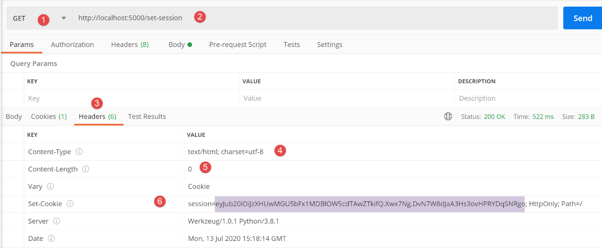
- em [1-2], a consulta enviada ao serviço web;
- em [3-6], os cabeçalhos HTTP da resposta;
- em [4], como no código não se especificou o tipo da resposta, o Flask utilizou, por predefinição, o tipo [text/html];
- em [5], o cliente sabe que não há nenhum documento na resposta;
- linha 6: o cabeçalho [Set-Cookie] foi enviado pelo servidor Flask. O seu valor é denominado «cookie de sessão». É constituído por três elementos:
- [session=valeur]: o valor representa a memória do utilizador numa forma codificada. Esta memória é descodificável (ver |https://blog.miguelgrinberg.com/post/how-secure-is-the-flask-user-session|). No entanto, devido à chave secreta utilizada pelo servidor, o utilizador não pode alterar a memória recebida para a reenviar posteriormente ao servidor. Quando o servidor recebe uma sessão, tem assim a garantia de receber uma sessão não corrompida;
- [HttpOnly]: a presença deste elemento indica ao navegador que o recebe que o cookie não deve ser acessível ao JavaScript que a página que está a apresentar possa conter;
- [Path=/] é o caminho para o qual o cookie de sessão deve ser reenviado; neste caso, trata-se de qualquer caminho da aplicação web. Sempre que o utilizador, através do teclado, solicitar explicitamente (digitando um URL) ou implicitamente (clicando num link) um URL deste domínio, o navegador reenviará automaticamente o cookie de sessão que recebeu;
A desvantagem da janela principal é que não se tem acesso à solicitação completa que levou a esta resposta. O que é apresentado nesta janela pode causar confusão:

- nos cabeçalhos HTTP [3-4] é apresentado como [5], um cookie de sessão. Poder-se-ia pensar, então, que o Postman incluiu um cookie de sessão na solicitação, quando na verdade não foi esse o caso. Os cabeçalhos [3] representam, na verdade, os cabeçalhos HTTP que serão enviados na próxima solicitação, tal como esta está atualmente configurada. O Postman acabou de receber um cookie de sessão que irá reenviar na próxima solicitação. É por isso que temos [5];
É possível aceder ao diálogo cliente/servidor na consola do Postman, que se abre com Ctrl-Alt-C:
GET /set-session HTTP/1.1
User-Agent: PostmanRuntime/7.26.1
Accept: */*
Cache-Control: no-cache
Postman-Token: 3673b73f-7600-4df4-8c4b-c37973e50df8
Host: localhost:5000
Accept-Encoding: gzip, deflate, br
Connection: keep-alive
HTTP/1.0 200 OK
Content-Type: text/html; charset=utf-8
Content-Length: 0
Vary: Cookie
Set-Cookie: session=eyJub20iOiJzXHUwMGU5bFx1MDBlOW5cdTAwZTkifQ.Xw6jGQ.y5Icu70wTIN-B0o_hwx0xDH247I; HttpOnly; Path=/
Server: Werkzeug/1.0.1 Python/3.8.1
Date: Wed, 15 Jul 2020 06:32:57 GMT
- linha 14: o cookie de sessão enviado pelo servidor;
Agora, vamos solicitar o URL [/get-session]:
- linha 9: o cliente Postman reenviou ao servidor o cookie de sessão que tinha recebido;
- linha 18: a cadeia jSON enviada pelo servidor;
Este exemplo ilustra vários aspetos:
- o cliente Postman reenvia o cookie de sessão que recebe do servidor Flask. Os navegadores da Web procedem sempre assim;
- vemos que a solicitação 2, [/get-session], permitiu recuperar uma informação criada durante a solicitação 1, [/set-session]. Temos, portanto, aqui uma memória do utilizador;
- linhas 11-16: o servidor Flask não devolveu nenhum cookie de sessão. Isto não acontece sistematicamente. O servidor Flask só devolve o cookie de sessão se a última solicitação tiver alterado a memória do utilizador;
22.6.3. script [session_scope_02]

O script [session_02] é o seguinte:
# dependências
import os
from flask import Flask, make_response, session
from flask_api import status
# aplicação Flask
app = Flask(__name__)
# chave secreta da sessão
app.secret_key = os.urandom(12).hex()
# Página inicial URL
@app.route('/', methods=['GET'])
def index():
# gerimos três contadores
if session.get('n1') is None:
session['n1'] = 0
else:
session['n1'] = session['n1'] + 1
if session.get('n2') is None:
session['n2'] = 10
else:
session['n2'] = session['n2'] + 1
if session.get('n3') is None:
session['n3'] = 100
else:
session['n3'] = session['n3'] + 1
# dicionário de contadores
compteurs = {"n1": session['n1'], "n2": session['n2'], "n3": session['n3']}
# envia-se a resposta
response = make_response(compteurs)
response.headers['Content-Type'] = 'application/json; charset=utf-8'
return response, status.HTTP_200_OK
# página inicial
if __name__ == '__main__':
app.config.update(ENV="development", DEBUG=True)
app.run()
- linha 11: aqui, a chave secreta é gerada por meio de uma função. A vantagem desta função é que gera uma cadeia de caracteres complexa de forma aleatória. Recorde-se que a variável [app] é a instância da classe Flask criada na linha 8;
- linha 15: desta vez, haverá apenas uma rota, a rota /;
- linhas 17-29: gerimos uma sessão que contém três contadores [n1, n2, n3]. Na primeira chamada do utilizador, [n1, n2, n3] = [0, 10, 100]; posteriormente, a cada chamada, estes contadores são incrementados em 1;
- linha 18: na primeira consulta, a sessão da aplicação está vazia. A expressão [session.get(‘clé’)] devolve o valor [None]. Nas consultas seguintes, esta expressão devolverá o valor associado à chave;
- linha 31: estes contadores são colocados num dicionário;
- linha 33: este dicionário é o documento da resposta HTTP. Recorde-se que o Flask transforma automaticamente os dicionários numa cadeia jSON;
- linha 34: informa-se ao cliente web que irá receber jSON;
- linha 35: enviamos a resposta HTTP ao cliente;
Vamos executar este script e consultar a aplicação web assim criada com o Postman, após ter eliminado todos os cookies do cliente Postman [1-3]:

Na consola do Postman, as trocas entre o cliente e o servidor são as seguintes:
GET / HTTP/1.1
User-Agent: PostmanRuntime/7.26.1
Accept: */*
Cache-Control: no-cache
Postman-Token: c7db536d-9352-4aa6-9877-04560e03d935
Host: localhost:5000
Accept-Encoding: gzip, deflate, br
Connection: keep-alive
HTTP/1.0 200 OK
Content-Type: application/json; charset=utf-8
Content-Length: 41
Vary: Cookie
Set-Cookie: session=eyJuMSI6MCwibjIiOjEwLCJuMyI6MTAwfQ.Xw6nLg.v49CeDWwqP-6Dp9Qt330GAe-dNA; HttpOnly; Path=/
Server: Werkzeug/1.0.1 Python/3.8.1
Date: Wed, 15 Jul 2020 06:50:22 GMT
{
"n1": 0,
"n2": 10,
"n3": 100
}
- em [14], o cookie de sessão enviado pelo servidor;
- em [18-22], a resposta do servidor na forma de uma cadeia jSON;
Vamos repetir a mesma solicitação uma segunda vez. Os registos evoluem da seguinte forma:
GET / HTTP/1.1
User-Agent: PostmanRuntime/7.26.1
Accept: */*
Cache-Control: no-cache
Postman-Token: 8205ad85-37b3-41f2-a171-70dd3b3a1679
Host: localhost:5000
Accept-Encoding: gzip, deflate, br
Connection: keep-alive
Cookie: session=eyJuMSI6MCwibjIiOjEwLCJuMyI6MTAwfQ.Xw6nLg.v49CeDWwqP-6Dp9Qt330GAe-dNA
HTTP/1.0 200 OK
Content-Type: application/json; charset=utf-8
Content-Length: 41
Vary: Cookie
Set-Cookie: session=eyJuMSI6MSwibjIiOjExLCJuMyI6MTAxfQ.Xw6nsw.OuxIQnGhmhSsan5Qu_FL3Iyu-9k; HttpOnly; Path=/
Server: Werkzeug/1.0.1 Python/3.8.1
Date: Wed, 15 Jul 2020 06:52:35 GMT
{
"n1": 1,
"n2": 11,
"n3": 101
}
- linha 9: o cliente Postman reenvia o cookie de sessão que recebeu;
- linha 15: na sua resposta, o servidor envia um novo cookie de sessão, uma vez que a solicitação do cliente alterou a memória do utilizador (= a sessão);
- linhas 19-23: os novos valores dos contadores;
22.6.4. script [session_scope_03]
Este novo script tem como objetivo demonstrar que é possível colocar diferentes tipos de Python numa sessão: lista, dicionário, objeto. A única restrição é que os objetos colocados na sessão sejam serializáveis em jSON. Se não o forem por predefinição (listas, dicionários), é necessário efetuar a conversão manualmente em jSON.
# configura-se a aplicação
import config
config = config.configure()
# dependências
import json
import os
from flask import Flask, make_response, session
from flask_api import status
from Personne import Personne
# aplicação Flask
app = Flask(__name__)
# chave secreta da sessão
app.secret_key = os.urandom(12).hex()
# Página inicial URL
@app.route('/', methods=['GET'])
def index():
# gestão de uma lista
liste = session.get('liste')
if liste is None:
# 1.ª solicitação
liste = [0, 10, 100]
else:
# solicitações seguintes
for i in range(len(liste)):
liste[i] += 1
# a lista é recolocada na sessão
session['liste'] = liste
# gestão de um dicionário
dico = session.get('dico')
if not dico:
# 1.ª consulta
dico = {"un": 0, "deux": 10, "trois": 100}
else:
# solicitações seguintes
dico = session['dico']
for key in dico.keys():
dico[key] += 1
# o dicionário é reposto na sessão
session['dico'] = dico
# gestão de uma pessoa
personne_json = session.get('personne')
if personne_json is None:
# 1.ª consulta
personne = Personne().fromdict({"prénom": "aglaë", "nom": "séléné", "âge": 70})
else:
# solicitações seguintes
personne = Personne().fromjson(personne_json)
personne.âge += 1
# a pessoa é recolocada na sessão
session['personne'] = personne.asjson()
# dicionário de resultados
résultats = {"liste": liste, "dict": dico, "personne": personne.asdict()}
# envia-se uma resposta jSON
response = make_response(json.dumps(résultats, ensure_ascii=False))
response.headers['Content-Type'] = 'application/json; charset=utf-8'
return response, status.HTTP_200_OK
# main
if __name__ == '__main__':
app.config.update(ENV="development", DEBUG=True)
app.run()
- linhas 1-3: a aplicação web é configurada;
- linhas 5-11: as dependências são importadas;
- linha 14: a aplicação Flask é instanciada;
- linha 17: o atributo [secret_key] é inicializado. É isto que permite a utilização de sessões;
- linha 21: a única rota da aplicação;
- linhas 23-33: gestão de uma lista na sessão. Nesta, foram colocados elementos serializáveis por predefinição em jSON;
- linhas 35-46: gestão de um dicionário na sessão. Foram inseridos neste dicionário elementos serializáveis por predefinição em jSON;
- linhas 48-58: gestão de uma pessoa. Um objeto [Personne] não é serializável por predefinição em jSON. Por isso, é necessário tomar precauções;
- linha 58: utiliza-se o método [BaseEntity.asjson] para armazenar na sessão a cadeia jSON da pessoa. Note-se que se poderia ter utilizado [personne.asdict], uma vez que [personne.asdict] é um dicionário que contém valores serializáveis por predefinição em jSON;
- linha 55: como armazenámos uma cadeia jSON na sessão, recuperamos a pessoa a partir da mesma utilizando o método [BaseEntity.fromjson];
- linha 61: cria-se o dicionário [résultats], que será enviado como resposta ao cliente. Sabemos que, neste caso, o Flask envia a cadeia jSON do dicionário. Por isso, este deve conter apenas valores serializáveis por predefinição em jSON;
- linha 64: colocamos explicitamente a cadeia jSON do dicionário [résultats] na resposta HTTP. O Flask teria feito isso por predefinição. No entanto, ainda por predefinição, utiliza o parâmetro [ensure_ascii=True], o que não nos convinha;
- linha 65: informamos ao cliente que irá receber jSON;
- linha 66: enviamos-lhe a resposta;
Iniciamos a aplicação web. Eliminamos todos os cookies do cliente Postman. Em seguida, este solicita o URL [http://localhost:5000]. O diálogo cliente/servidor na consola do Postman é o seguinte:
GET / HTTP/1.1
User-Agent: PostmanRuntime/7.26.1
Accept: */*
Cache-Control: no-cache
Postman-Token: 5f8b7c63-aa8a-4429-a2fa-62141423d933
Host: localhost:5000
Accept-Encoding: gzip, deflate, br
Connection: keep-alive
HTTP/1.0 200 OK
Content-Type: application/json; charset=utf-8
Content-Length: 135
Vary: Cookie
Set-Cookie: session=.eJw9isEKwyAQRH-lzHkPm15K91dqD2mzBMFq0AgF8d-jsRQG9u3MK1jsO0AKFs1fyMSEPQabOjbOHsKV4GzaFfJgmnr4Sdg0puB9a1EMtmgys959-BjIxWBe3XxWLwNq_39IQ3Q_f5zhnHxdtYs3rqgH4gQvMg.Xw6yGw.Bwpt3q-sH03gFLmg2FIPXV_ZNt8; HttpOnly; Path=/
Server: Werkzeug/1.0.1 Python/3.8.1
Date: Wed, 15 Jul 2020 07:36:59 GMT
{"liste": [0, 10, 100], "dict": {"un": 0, "deux": 10, "trois": 100}, "personne": {"prénom": "aglaë", "nom": "séléné", "âge": 70}}
Fazemos a solicitação uma segunda vez:
GET / HTTP/1.1
User-Agent: PostmanRuntime/7.26.1
Accept: */*
Cache-Control: no-cache
Postman-Token: 40fd00ea-d45c-46b7-a51e-d4d433a37b5c
Host: localhost:5000
Accept-Encoding: gzip, deflate, br
Connection: keep-alive
Cookie: session=.eJw9isEKwyAQRH-lzHkPm15K91dqD2mzBMFq0AgF8d-jsRQG9u3MK1jsO0AKFs1fyMSEPQabOjbOHsKV4GzaFfJgmnr4Sdg0puB9a1EMtmgys959-BjIxWBe3XxWLwNq_39IQ3Q_f5zhnHxdtYs3rqgH4gQvMg.Xw6yGw.Bwpt3q-sH03gFLmg2FIPXV_ZNt8
HTTP/1.0 200 OK
Content-Type: application/json; charset=utf-8
Content-Length: 135
Vary: Cookie
Set-Cookie: session=.eJw9isEKwyAQRH-lzHkP2kupv9LtIW2WIBgNGqEg_nu3seQ0b2Zew-zfCa5hlvqBs5aw5-SLolGuUaETgi-7wD0sqaHPk7BJLilGXdEYW-ZqjNxjWhnuwpiWMB3Ti0Haz6MMMfz9EcM5-LrIT7zZjv4F5NYvOQ.Xw6ydQ.PMWRCqKx9HNnb_DyK-ha-9pCF7M; HttpOnly; Path=/
Server: Werkzeug/1.0.1 Python/3.8.1
Date: Wed, 15 Jul 2020 07:38:29 GMT
{"liste": [1, 11, 101], "dict": {"deux": 11, "trois": 101, "un": 1}, "personne": {"prénom": "aglaë", "nom": "séléné", "âge": 71}}
- linha 9: o cliente reenvia o cookie de sessão que recebeu;
- linha 15: o servidor devolve-lhe outro, uma vez que o conteúdo da sessão mudou (linha 19). Recorde-se que este conteúdo está presente no cookie de sessão sob forma codificada;
22.7. scripts [flask/06]: informações partilhadas por todos os utilizadores
22.7.1. Introdução
Esta secção tem como objetivo mostrar como gerir informações de âmbito da aplicação, ou seja, partilhadas por todos os utilizadores. Estas informações são, normalmente, informações de configuração da aplicação. Vimos que uma aplicação web pode manter diferentes tipos de memória:
Aqui, estamos interessados na memória da aplicação [3].
22.7.2. script [application_scope_01]
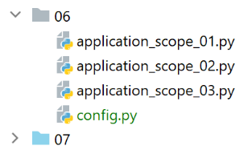
O script [application_scope_01] mostra uma forma de gerir dados com âmbito «aplicação»:
# configura-se a aplicação
import config
config = config.configure()
# dependências
from flask import Flask, make_response
from flask_api import status
# aplicação Flask
app = Flask(__name__)
# Página inicial URL
@app.route('/', methods=['GET'])
def index():
# o objetivo é demonstrar que a aplicação permanece na memória entre os pedidos dos diferentes clientes
# cada cliente interage com a mesma aplicação
# app_infos representa informações ao nível da aplicação e não ao nível da sessão
# ou seja, diz respeito a todos os utilizadores e não a um em particular
# esta informação está aqui armazenada em [config] (não obrigatório)
# dicionário de resultados
résultats = {"config": config}
# envia-se a resposta
response = make_response(résultats)
response.headers['Content-Type'] = 'application/json; charset=utf-8'
return response, status.HTTP_200_OK
# main
if __name__ == '__main__':
# verifica-se se este código é executado várias vezes
print("application app lancée")
# inicia-se a aplicação web
app.config.update(ENV="development", DEBUG=True)
app.run()
- linhas 1-3: recupera-se o dicionário da configuração. Vamos demonstrar que o código localizado fora das funções de encaminhamento é executado apenas uma vez. A aplicação Flask permanece na memória. Todas as informações inicializadas fora das rotas são globais para estas e, portanto, conhecidas por elas. Assim, o dicionário [config] da linha 3 será devolvido pela rota / (linha 24). Vamos demonstrar que todos os clientes web receberão o mesmo dicionário e que este é, portanto, partilhado por todos os clientes. Trata-se, portanto, de uma informação com âmbito «aplicação»;
- linha 35: inserimos um registo para verificar se o código das linhas fora da função de encaminhamento (linhas 1-10, 32-38) é executado várias vezes;
A configuração [config] é a seguinte:
def configure():
# retornamos a configuração
config = {
# configuração do Flask
"SECRET_KEY": "vibnFfrdWYUp?*LQ"
}
return config
Estamos a iniciar esta aplicação. Os registos na consola PyCharm são os seguintes:

- em [1], arranque inicial da aplicação;
- em [2], uma vez que foi solicitado o modo [Debug], a aplicação é reiniciada no modo [Debug];
Agora, com um navegador (Chrome, abaixo), solicitamos o URL [http://127.0.0.1:5000/]:

Agora, com o navegador Firefox:

Agora, com o cliente Postman:
Agora, voltamos à consola [Run] do Pycharm:

- os dois registos [1, 2] continuam lá, mas não há mais nenhum, embora se vejam as três solicitações recebidas pelo servidor web;
Para termos a certeza absoluta de que a aplicação não é recarregada a cada nova solicitação, podemos inserir um contador na configuração e incrementá-lo a cada nova solicitação. Veremos então que cada cliente vê o contador no estado em que o cliente anterior o deixou. Recorde-se, no entanto, que os clientes não devem alterar dados de âmbito da aplicação, uma vez que estes são partilhados entre todos os clientes e que, num contexto em que o servidor atende simultaneamente vários clientes sem garantia de que a solicitação de um cliente seja executada na íntegra sem ser interrompida, um cliente 1 que tenha enviado uma solicitação 1 interrompida antes do seu término pode deixar os dados partilhados num estado corrompido para os clientes seguintes.
22.7.3. script [application_scope_02]

O script [application_scope_02] vai fazer o que não se deve fazer: permitir que os clientes alterem informações partilhadas com outros utilizadores. Vamos partilhar um contador entre os utilizadores, que o irão incrementar. Veremos que cada utilizador vê as alterações feitas pelos outros utilizadores no contador.
O script é o seguinte:
# dependências
from flask import Flask, make_response
from flask_api import status
# aplicação Flask
app = Flask(__name__)
# dados do âmbito da aplicação
config = {
"counter": 0
}
# Página inicial URL
@app.route('/', methods=['GET'])
def index():
# o objetivo é demonstrar que o dicionário [config] é partilhado entre todos os clientes
# da aplicação web
# incrementa-se o contador
config["counter"] += 1
# envia-se a resposta
response = make_response(config)
response.headers['Content-Type'] = 'application/json; charset=utf-8'
return response, status.HTTP_200_OK
# main
if __name__ == '__main__':
app.config.update(ENV="development", DEBUG=True)
app.run()
- linhas 10-12: o dicionário [config] partilhado pelos utilizadores. Contém um contador;
- linha 22: sempre que um utilizador solicitar o URL /, o contador da configuração será incrementado;
- linhas 23-26: a cadeia jSON do dicionário é enviada a cada cliente;
Executamos este script. Em seguida, solicitamos o URL [http://127.0.0.1:5000/] com um primeiro navegador:

Em seguida, faz-se o mesmo com um segundo navegador:
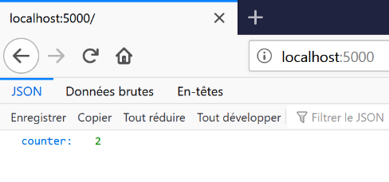
Depois, uma terceira vez com o Postman:
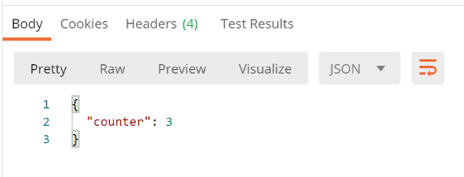
Vemos que cada cliente recupera o contador no estado em que o cliente anterior o deixou. Portanto, têm efetivamente acesso à mesma informação.
22.7.4. script [application_scope_03]
O script [application_scope_03] mostra por que razão a informação partilhada entre utilizadores deve ser de leitura única.

O script é o seguinte:
# dependências
import threading
from time import sleep
from flask import Flask, make_response
from flask_api import status
# aplicação Flask
app = Flask(__name__)
# dados do âmbito da aplicação
config = {
"counter": 0
}
# Página inicial URL
@app.route('/', methods=['GET'])
def index():
# o objetivo é demonstrar que o dicionário [config] é partilhado entre todos os clientes
# da aplicação web e que deve ser de leitura única
# nome do thread
thread_name = threading.current_thread().name
# lê-se o contador
counter = config["counter"]
print(f"compteur lu : {counter}, par le thread {thread_name}")
# pausa de 5 segundos — assim, outros clientes serão atendidos
sleep(5)
# incrementa-se o contador da configuração
config["counter"] = counter + 1
# registo
print(f"compteur écrit : {config['counter']}, par le thread {thread_name}")
# envia-se a resposta
response = make_response(config)
response.headers['Content-Type'] = 'application/json; charset=utf-8'
return response, status.HTTP_200_OK
# main
if __name__ == '__main__':
app.config.update(ENV="development", DEBUG=True)
app.run(threaded=True)
- linha 43: alterámos o modo de execução da aplicação web. Escrevemos [threaded=True] para indicar que a aplicação deveria servir os utilizadores simultaneamente. Isto é feito através de threads de execução:
- pode haver várias threads de execução simultâneas, cada uma a servir um utilizador;
- o processador da máquina é partilhado por estas threads;
- uma thread pode ser interrompida antes de concluir o seu trabalho. Será retomada posteriormente;
- linha 19: a função [index] pode ser executada simultaneamente por várias threads;
- linha 24: recupera-se o nome da thread que executa a função [index];
- linha 26: lê-se o valor do contador. Para efeitos da nossa demonstração, decomponho o incremento do contador da seguinte forma:
- etapa 1: leitura do contador (1, por exemplo) pela thread 1;
- etapa 2: pausa do thread 1 durante 5 segundos (linha 29). Como o thread 1 solicitou uma pausa, o processador é cedido a outro thread, o thread 2. O objetivo é que este novo thread leia o mesmo valor do contador (=1). Em seguida, também faz uma pausa de 5 segundos e perde o processador;
- etapa 3: incremento do contador, linha 31, a partir do valor lido na etapa 1 (=1). O thread 1 é o primeiro a fazê-lo: passa o contador para 2 e, em seguida, termina a execução da função [index]. Em seguida, é a vez do thread 2 acordar e também aumentar o contador para 2 a partir do valor lido na etapa 1 (=1). No final, após a execução dos dois threads, o contador está em 2, quando deveria estar em 3;
- linha 33: exibimos o valor do contador para verificação;
Executamos o script e, em seguida, acedemos à URL [http://loaclhost :5000/] com dois navegadores e, depois, com o Postman. Os registos na consola PyCharm são então os seguintes:
C:\Data\st-2020\dev\python\cours-2020\python3-flask-2020\venv\Scripts\python.exe C:/Data/st-2020/dev/python/cours-2020/python3-flask-2020/flask/06/application_scope_03.py
* Serving Flask app "application_scope_03" (lazy loading)
* Environment: development
* Debug mode: on
* Restarting with stat
* Debugger is active!
* Debugger PIN: 334-263-283
* Running on http://127.0.0.1:5000/ (Prima CTRL+C para sair)
compteur lu : 0, par le thread Thread-2
compteur lu : 0, par le thread Thread-4
compteur écrit : 1, par le thread Thread-2
127.0.0.1 - - [16/Jul/2020 08:55:37] "GET / HTTP/1.1" 200 -
compteur écrit : 1, par le thread Thread-4
127.0.0.1 - - [16/Jul/2020 08:55:40] "GET / HTTP/1.1" 200 -
compteur lu : 1, par le thread Thread-5
compteur écrit : 2, par le thread Thread-5
127.0.0.1 - - [16/Jul/2020 08:55:46] "GET / HTTP/1.1" 200 -
- linhas 9-10: os dois primeiros threads, 2 e 4, lêem o mesmo valor 0 do contador;
- linha 11: o thread 2 aumenta o contador para 1;
- linha 13: o thread 4 altera o contador para 1. A partir deste momento, o valor do contador está incorreto;
- linhas 15-16: o thread 5 não é interrompido e gere corretamente o valor do contador;
O que se retira deste exemplo é que o código de uma aplicação web não deve alterar o valor das informações partilhadas pelos utilizadores.
22.8. scripts [flask/07]: gestão de estradas
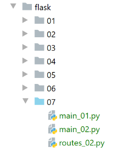
Estamos aqui a abordar a gestão das rotas de uma aplicação, ou seja, as URL servidas pela aplicação web.
22.8.1. script [main_01]: rotas configuradas
O script [main_01] introduz a possibilidade de configurar as rotas:
from flask import Flask, make_response
from flask_api import status
# aplicação Flask
app = Flask(__name__)
# envio da resposta
def send_plain_response(réponse: str):
# a resposta é enviada
response = make_response(réponse)
response.headers['Content-Type'] = 'text/plain; charset=utf-8'
return response, status.HTTP_200_OK
# /apelido/nome
@app.route('/<string:nom>/<string:prenom>', methods=['GET'])
def index(nom, prenom):
# resposta
return send_plain_response(f"{prenom} {nom}")
# inicialização da sessão
@app.route('/init-session/<string:type>', methods=['GET'])
def init_session(type: str):
# resposta
return send_plain_response(f"/init-session/{type}")
# autenticar-utilizador
@app.route('/authentifier-utilisateur', methods=['POST'])
def authentifier_utilisateur():
# resposta
return send_plain_response("/authentifier-utilisateur")
# calcular-imposto
@app.route('/calculer-impot', methods=['POST'])
def calculer_impot():
# resposta
return send_plain_response("/calculer-impot")
# listar-simulações
@app.route('/lister-simulations', methods=['GET'])
def lister_simulations():
# resposta
return send_plain_response("/lister-simulations")
# eliminar-simulação
@app.route('/supprimer-simulation/<int:numero>', methods=['GET'])
def supprimer_simulation(numero: int):
# resposta
return send_plain_response(f"/supprimer-simulation/{numero}")
# fim-sessão
@app.route('/fin-session', methods=['GET'])
def fin_session():
# resposta
return send_plain_response(f"/fin-session")
# principal
if __name__ == '__main__':
app.config.update(ENV="development", DEBUG=True)
app.run()
- linha 17: especifica-se o tipo dos parâmetros do URL. Isto permite ao Flask efetuar verificações. Se o parâmetro não for do tipo esperado, o pedido do cliente será recusado (erro 400 Bad Request). Assim, o Flask faz parte do trabalho que teríamos de fazer;
- linha 18: para os parâmetros, devemos utilizar os nomes exatos dos parâmetros da linha 17, mas não necessariamente a sua ordem;
- linha 20: utilizamos a função [send_plain_response] para enviar a resposta ao cliente web;
- linha 9: a função [send_plain_response] recebe a cadeia de caracteres a enviar ao cliente;
- linha 11: o corpo da resposta HTTP é construído;
- linha 12: informa-se ao cliente que lhe está a ser enviado texto simples;
- linha 13: envia-se a resposta HTTP;
- linhas 23-62: outras rotas configuradas que serão utilizadas posteriormente num exercício prático;
Executamos o script e consultamo-lo com o cliente Postman:

22.8.2. script [main_02]: externalização das rotas
No script [main_01] anterior, o código pode tornar-se extenso se houver muitas rotas. O script [main_02] mostra como externalizar as rotas.
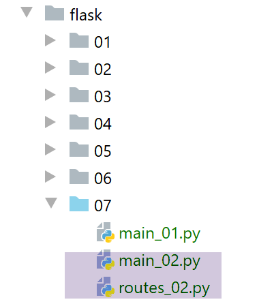
O script [routes_02] reúne as funções associadas às estradas do script anterior:
from flask import make_response
from flask_api import status
def send_response(réponse: str):
# enviar a resposta
response = make_response(réponse)
response.headers['Content-Type'] = 'text/plain; charset=utf-8'
return response, status.HTTP_200_OK
# Página inicial URL
def index(nom, prenom):
# resposta
return send_response(f"{prenom} {nom}")
# inicialização da sessão
def init_session(type: str):
# resposta
return send_response(f"/init-session/{type}")
# autenticar-utilizador
def authentifier_utilisateur():
# resposta
return send_response("/authentifier-utilisateur")
# calcular-imposto
def calculer_impot():
# resposta
return send_response("/calculer-impot")
# listar simulações
def lister_simulations():
# resposta
return send_response("/lister-simulations")
# eliminar-simulação
def supprimer_simulation(numero: int):
# resposta
return send_response(f"/supprimer-simulation/{numero}")
# fim-sessão
def fin_session():
# resposta
return send_response(f"/fin-session")
Note-se que o script [routes_02] não é um script de rotas. Trata-se de uma lista de funções. É o script principal [main_02] que estabelece a ligação entre as rotas e as funções:
from flask import Flask
# as funções das rotas são transferidas para o seu próprio script
import routes_02
# aplicação Flask
app = Flask(__name__)
# associações entre rotas e funções
app.add_url_rule('/<string:nom>/<string:prenom>', methods=['GET'], view_func=routes_02.index)
app.add_url_rule('/init-session/<string:type>', methods=['GET'], view_func=routes_02.init_session)
app.add_url_rule('/authentifier-utilisateur', methods=['POST'], view_func=routes_02.authentifier_utilisateur)
app.add_url_rule('/calculer-impot', methods=['POST'], view_func=routes_02.calculer_impot)
app.add_url_rule('/lister-simulations', methods=['GET'], view_func=routes_02.lister_simulations)
app.add_url_rule('/supprimer-simulation/<int:numero>', methods=['GET'], view_func=routes_02.supprimer_simulation)
app.add_url_rule('/fin-session', methods=['GET'], view_func=routes_02.fin_session)
# main
if __name__ == '__main__':
app.config.update(ENV="development", DEBUG=True)
app.run()
- linha 4: importa-se o script das funções associadas às rotas;
- linhas 9-16: associação de rotas a funções;
Com este método, cada função associada a uma rota pode ser objeto de um script separado, se necessário.
Os resultados são os mesmos que os obtidos com o script [main_01] anterior.